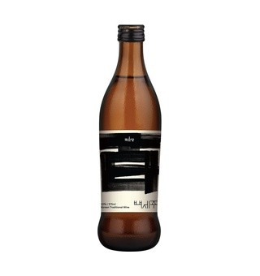

BAEKSEJU
백세주,
백년을 잇는 향기
1992년 첫선을 보인 백세주는
생쌀발효법으로 빚은 전통 약주입니다.

SINCE 1992
백세주
술빚기만을 위해 키운 쌀과 손수 띄운 누룩, 쌀을 찌지 않는 생쌀발효법으로 빚어 산뜻한 풍미와 쌓아온 시간의 깊이를 담았습니다.
- 용량
95ml · 375ml · 500ml
- 알코올 도수
13도
- 원료
설갱미(국산), 전분, 누룩, 인삼, 오미자, 복령, 구기자 외 한약재
HERB
열두 가지 좋은 재료
잔류농약 · 중금속 등 엄격한 기준을
통과한 한약재만을 씁니다.
- 01인삼
- 02오미자
- 03복령
- 04구기자
- 05산수유
- 06산약
- 07산사자
- 08수국
- 09생강
- 10감초
- 11황기
- 12오가피
STORY
취하려 마시는 술이
아닙니다
-
01
동의보감에 약으로 쓰는 술은 좋은 쌀과 좋은 누룩으로 만든 것이어야 한다고 했습니다. 백세주는 설갱미와 국순당이 개발한 누룩으로 빚습니다.
-
02
백세주는 취하도록 마시는 술이 아니라, 서로를 생각하며 자리의 멋과 흥취를 돋우는 술입니다.
-
03
한국전통식품 베스트5 선발대회에서 대통령상을 받았고, 러시아 PROD EXPO와 상해 Sial에서 은상을 받았습니다.